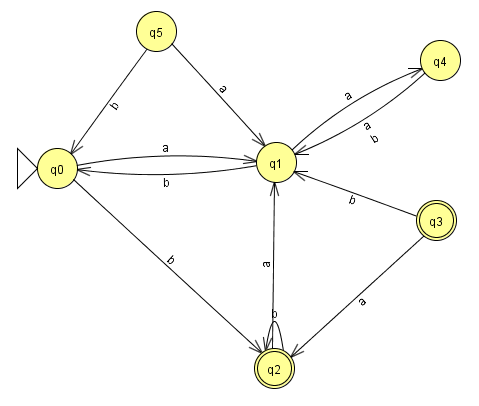

[⭐⭐⭐] 29. Automata 2. (5 pont)
Az automata_1 feladatban már megismerkedtünk az automaták fogalmával. Ebben a feladatban azt kell megvizsgálnunk, hogy az automatánknak mely állapotai elérhetőek a kezdőállapotból.

Előfordulhat, hogy egyes állapotokba nem tudunk eljutni, akárhogy is próbálkozunk. Például a fenti ábrán láthatjuk, hogy a q3 és q5 ilyen, mivel azokból csak kiinduló nyilak vannak. Tehát a
kezdőállapotból (q0) elérjük nyilván önmagát (mivel már ott vagyunk). Emellett 1 lépésben el tudjuk érni a q1-et és q2-t, illetve két lépésben a q4-et (mivel ehhez keresztül kell menni a q1-en).
A nyilakon lévő betűk jelen esetben lényegtelenek.
A jelenlegi automata megvalósításunkban ilyen biztos nem fordul elő, mivel az automata a kezdőállapotával adott, és az onnan induló átmeneteket tároljuk. Ennek ellenére kíváncsiak vagyunk arra, hogy
az automatánkban milyen állapotok vannak.
A feladatunk az elerheto metódus megvalósítása, ami egy állapotokból álló halmazt ad vissza. A halmazban azok az állapotok legyenek benne, amik elérhetőek.